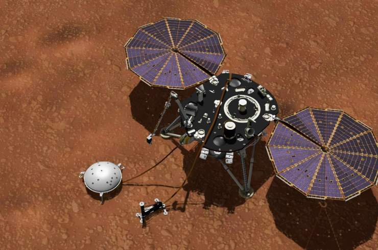

La misión InSight confirma que en Marte se producen terremotosmore_vert
La misión InSight confirma que en Marte se producen terremotos close
Las medidas que ha tomado el aterrizador InSight de la NASA en el subsuelo de Marte durante sus primeros diez meses de operación han registrado 174 eventos sísmicos, algunos casi de magnitud 4. El epicentro de los más intensos parece estar en una región con fallas y flujos volcánicos situada a 1.600 km de la nave.
Ver más